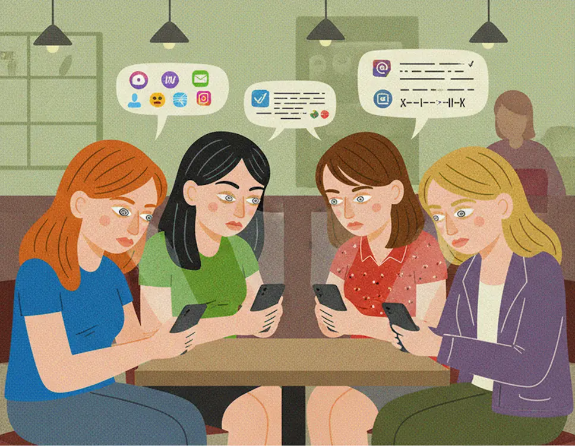
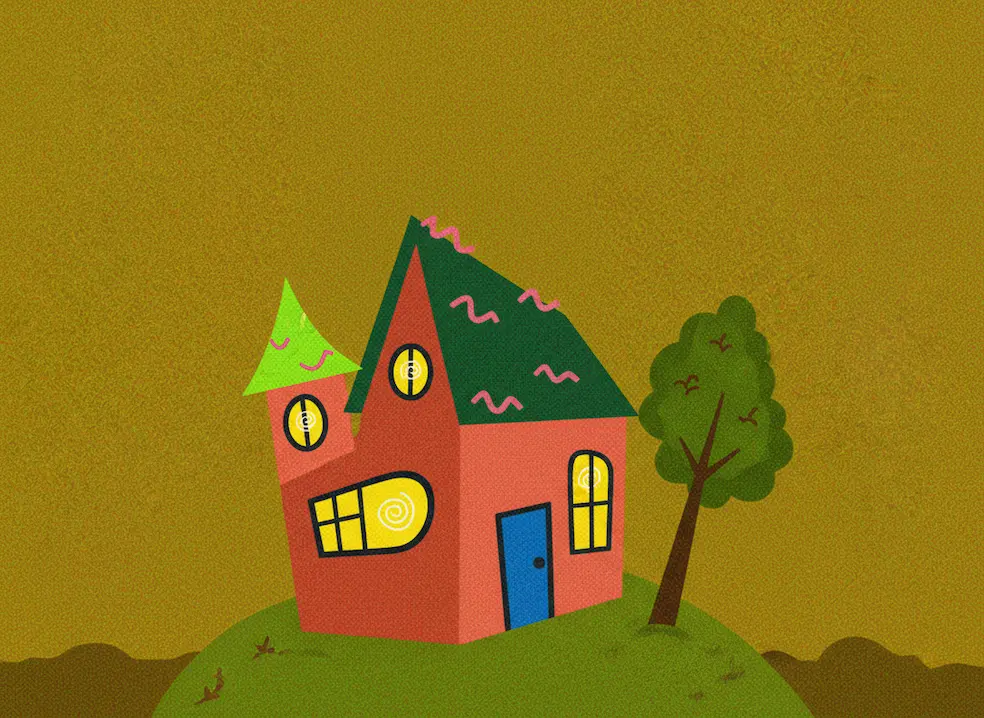

Vågn op: Få dit fokus tilbage fra 'brain rot'
Er dine apps ved at overtage dit liv? 📱 TikTok, Reels, Shorts – de er designet til at gøre dig afhængig. Det er #brainrot, der fører til depression og søvnproblemer. Tid til en reality check?
Se mereNÅR DIN HJERNE GÅR I FORDÆRVELSE
Er dine apps ved at overtage dit liv? 📱 TikTok, Reels, Shorts – de er designet til at gøre dig afhængig. Det er #brainrot, der fører til depression og søvnproblemer. Tid til en reality check?
Se mereMister du fokus hurtigere end en TikTok-swipe? 🤯 Du scroller i timevis, men din hjerne er "offline", når det gælder lektier? Det er "brain rot". Take control! Få lavet en afvænningsplan her GRATIS!
Se mereScrollen bliver til vanen, vanen til afhængighed – og pludselig føles hjernen som mos. Er du ved at udvikle digital brain rot? Tag brain rot testen!🗒️
Føles hjernen som grød? Her er din opskrift på mental genoplivning – med koncentration, frisk luft og digital detox som hovedingredienser. Tryk og få klarhed!
Du tror bare du "lige tjekker TikTok" - men det er din hjerne der bliver kogt langsomt i dopamin.

Sociale medier får dig til at føle du er forbundet med alle - men i virkeligheden bliver du mere alene end nogensinde.
Sociale medier får dig til at føle, du er forbundet med alle — men i virkeligheden bliver du mere alene end nogensinde.
Du er stofmisbruger
Hver gang du får et like, en kommentar eller en ny følger, sker der noget i din hjerne. Den udskiller dopamin — det samme stof, der aktiveres af sukker, spil og stoffer. Det føles godt. Men ligesom med alt andet, der føles godt, vil du have mere. Og mere. Og mere.
Sociale medier som TikTok, Instagram og Snapchat lever af din opmærksomhed. De bruger algoritmer, der er skabt til at holde dig fanget. De ved præcis, hvad du vil se, hvornår du keder dig, og hvilke typer indhold der får dig til at blive hængende. Det er derfor, du åbner appen “bare for at tjekke noget” — og pludselig er der gået en time.
Mangel på ægte kontakt
Men det handler ikke kun om tid. Det handler om, hvordan det ændrer din hjerne og dit forhold til andre. Jo mere tid du bruger online, jo mindre tid bruger du på ægte kontakt. Vi er “forbundet” hele tiden, men vi taler mindre, ser færre mennesker, og føler os mere alene. Mange unge oplever lavere selvværd, fordi de konstant sammenligner sig med andres perfekte liv på skærmen. Det er en illusion — men hjernen tror på det, den ser.
Tag kontrollen tilbage
Du kan ikke kæmpe mod algoritmen alene, men du kan tage kontrollen tilbage. Slå notifikationer fra. Sæt tidsgrænser. Brug sociale medier bevidst i stedet for automatisk. Du behøver ikke slette alt — bare bruge det på dine egne vilkår. Din hjerne er ikke et stykke software, der kan opdateres med et klik. Men du kan “debugge” den ved at tage pauser og være mere til stede i virkeligheden. Det er der, det ægte dopamin findes.
Han ville bare se et par Youtube Shorts. Men en dag stoppede han ikke igen.
Han ville bare se et par YouTube Shorts. Men en dag stoppede han ikke igen.
Emil var bare en dreng
Emil var 16 år og elskede at spille fodbold, hænge ud med vennerne og game lidt om aftenen. Helt almindelig fyr. Men så begyndte han at se YouTube Shorts. “Bare lige et par klip inden jeg skal sove,” sagde han. Men søvnen kom aldrig.
Det startede uskyldigt, men snart sad han til langt ud på natten med mobilen i hånden. Skole blev hårdere. Træning blev droppet. Han begyndte at isolere sig. “Jeg orker ikke,” sagde han, mens han scrollede videre. Hans venner skrev, men han svarede sjældent. Familien så ham mest som et ansigt oplyst af skærmens blå lys.
En tom skal
En aften gik internettet i huset. Forældrene fandt Emil grædende. Han følte sig tom, rastløs — som om han ikke fandtes uden sin skærm. Uden videoerne vidste han ikke, hvad han skulle stille op med sig selv. Det var dér, han indså, hvor langt han var faldet ned i det digitale hul.
Afvænning
I dag prøver Emil at finde balancen igen. Han går ture uden mobilen, snakker med vennerne ansigt til ansigt og har slette-appen på standby, hvis det går for vidt. Han siger, det føles som at vågne fra en drøm, man troede var virkelig.
Historien om Emil er ikke enestående. Den kunne være hvem som helst. Den kunne være dig. For skærmen føles tryg — men virkeligheden er stadig derude, og den er meget smukkere, når du kigger op.